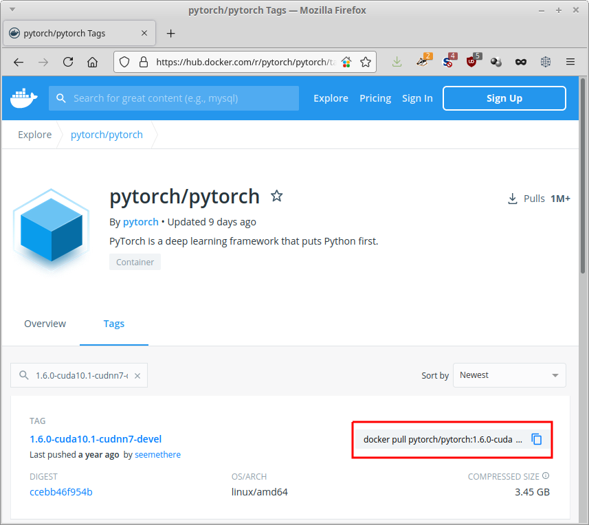

Basics
In this section we will touch on a very small subset of functionality provided by the docker
command-line tool. With this subset you will be able to use already existing images,
spinning up containers and being able to run code from the host machine within
containers.
Installation#
If you do not have docker installed yet, then please do so. See the official documentation for your respective operating system flavour.
Pulling#
Before you can use an image, you either need to build it locally or pull it from a
registry. The latter is, obviously, done by the pull sub-command. The docker hub allows
you to quickly copy the pull command for a specific image (see highlighted area in
image below).

The URL that you can use with docker consists of these parts:
If the registry-url is omitted, it defaults to docker.io/.
If :tag is omitted, it defaults to :latest.
The command copied from the above page looks like this:
The namespace is pytorch, the image is pytorch and the tag is 1.6.0-cuda10.1-cudnn7-devel.
When executing this command, all layers that have not been cached locally will be downloaded. It will look similar to this screen, with each layer having its own unique hash:
metal:[101]~>docker pull pytorch/pytorch:1.6.0-cuda10.1-cudnn7-devel
1.6.0-cuda10.1-cudnn7-devel: Pulling from pytorch/pytorch
7ddbc47eeb70: Pull complete
c1bbdc448b72: Pull complete
8c3b70e39044: Pull complete
45d437916d57: Pull complete
d8f1569ddae6: Pull complete
85386706b020: Pull complete
ee9b457b77d0: Extracting [==================================================>] 184B/184B
be4f3343ecd3: Pulling fs layer
30b4effda4fd: Waiting
b398e882f414: Waiting
4fe309685765: Waiting
8b87a3cb3232: Waiting
6cac8a6cf141: Waiting
The output from the finished pull will look like this:
metal:[103]~>docker pull pytorch/pytorch:1.6.0-cuda10.1-cudnn7-devel
1.6.0-cuda10.1-cudnn7-devel: Pulling from pytorch/pytorch
7ddbc47eeb70: Pull complete
c1bbdc448b72: Pull complete
8c3b70e39044: Pull complete
45d437916d57: Pull complete
d8f1569ddae6: Pull complete
85386706b020: Pull complete
ee9b457b77d0: Pull complete
be4f3343ecd3: Pull complete
30b4effda4fd: Pull complete
b398e882f414: Pull complete
4fe309685765: Pull complete
8b87a3cb3232: Pull complete
6cac8a6cf141: Pull complete
Digest: sha256:ccebb46f954b1d32a4700aaeae0e24bd68653f92c6f276a608bf592b660b63d7
Status: Downloaded newer image for pytorch/pytorch:1.6.0-cuda10.1-cudnn7-devel
docker.io/pytorch/pytorch:1.6.0-cuda10.1-cudnn7-devel
Running#
Once an image has been downloaded, you can spin up a container. Think of a container
as a concrete instantiation of a blueprint (i.e., the image), which can receive
modifications that will stay until its removed. The sub-command for spinning up,
is run.
When running an image (i.e., spinning up a container), this can be done either in interactive mode or not. The former can be used at development time or for manually running experiments and the latter for a production setting, where you simply supply a command to be executed within the container, like building a model.
For interactive use, you will need the -it flags, which stand for interactive
and tty (TeleTYpewriter or console). For the time being, we will stick
with interactive mode. The non-interactive mode is explained briefly in
Dockerfile/Running the image (non-interactive)
Starting the just downloaded pytorch image in interactive mode is achieved with this command:
This will give you a prompt similar to this:
Which you can exit like any other shell via exit or CTRL+D.
When starting up an image without specifying a name for the container (--name),
docker will give it an automatic generated name rather than just a hash, which
can be quite humorous:
If you want to list containers, you need to use the action ls of the container
sub-command. If all containers, not just currently running ones, should be listed,
then you need to add the -a option. So, for listing all containers on your system,
run this:
Other useful actions for the container sub-command are:
start- start an existing containerstop- stop a running containerrm- remove a stopped container
GPU support#
The image that we downloaded comes with CUDA support, in order to make use of an NVIDIA GPU that we have on our host system. But, the graphics card does not automatically get made available to the containers, we need to explicitly state that we want a container to have access to it.
For docker versions prior to 19.03 (e.g., still used by some NVIDIA IoT devices), you need to supply the following parameter:
Otherwise, use this:
Or supply the specific ID of the GPU, if you are on a multi-GPU system (source), e.g., for the second GPU:
Volumes#
By default, a docker container does not have access to any directories on the host system and you will have to explicitly give access via volumes. Docker distinguishes between named volumes (partitions created and managed by the docker daemon) and simply mapped directories. Usually, it is sufficient to just map local directories into your container. That way, you have full control over your data and models on the host system.
The easiest way to map a directory (or even a single file) is to use the
-v or --volume option. The alternative is the --mount option, which gives
you greater control (but seems like overkill most of the time for a data scientist).
For more information, check out the docker documentation on
volumes.
One thing to be aware of is that you can hide directories within the container
by mapping an external directory onto an existing one, e.g., /usr or /opt.
This can have unexpected side effects, like missing libraries, executables, data, etc.
It is worthwhile to inspect the internals of a container first, before mapping
volumes willy-nilly.
The command below maps the /some/where directory of the host to the directory
/opt/local within the container:
Please note that directories need to be absolute paths. If you want to map the current
directory into the container, then you can make use of the pwd command like this:
Of course, the -v option can be supplied multiple times.
Clean up#
You will soon notice that you are accumulating a large number of containers and images on your system, taking up significant space. Here are some commands that you can use to clean up your system:
-
stop all containers
-
remove all containers
-
purging all unused or dangling images, containers, volumes, and networks:
-
you can be even more aggressive when adding the
-aflag:
Login & Credentials#
When using non-public registries, you will most likely have to perform a login,
using the login sub-command (and logout for logging out). By default, docker
will store your password only base64 encoded and not encrypted. It is therefore
recommended using an external credentials store. For more information, see
the docker documentation on the login command.